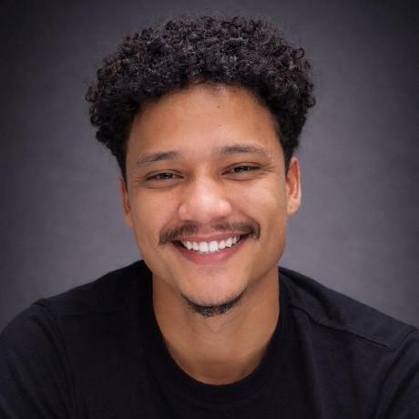
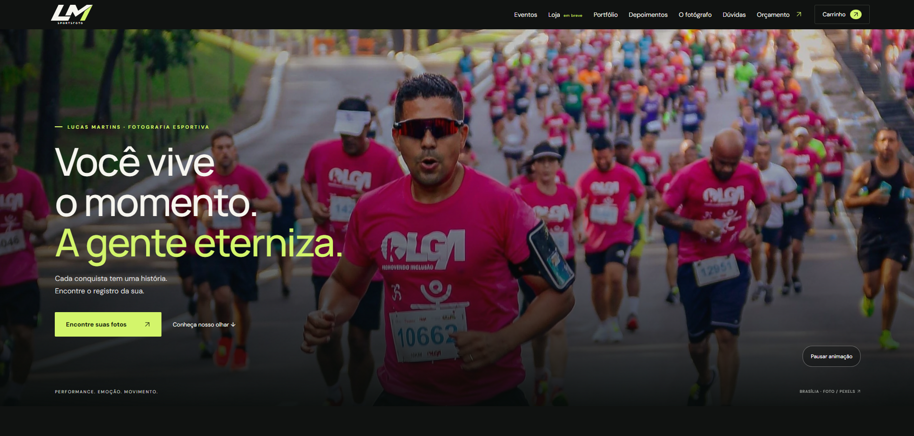
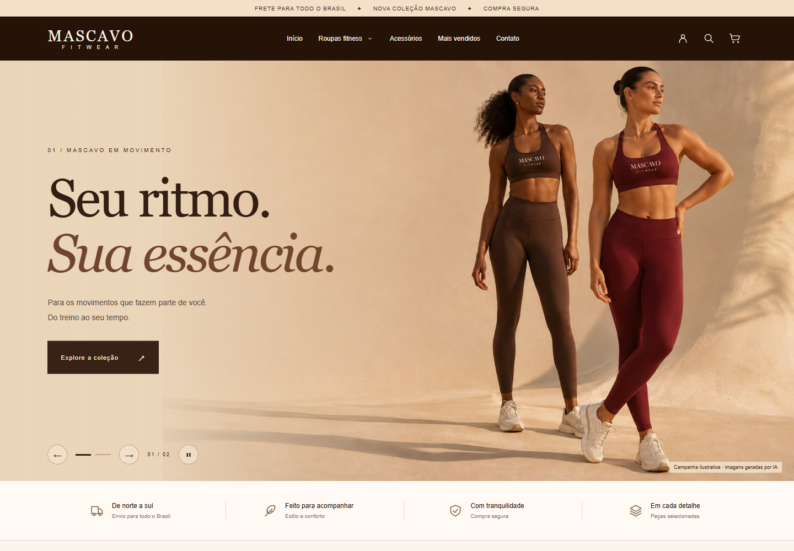
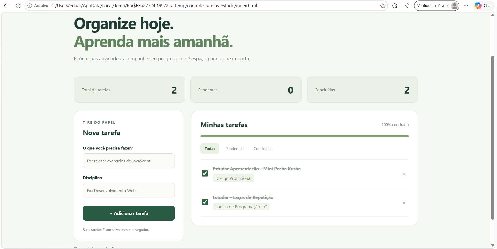
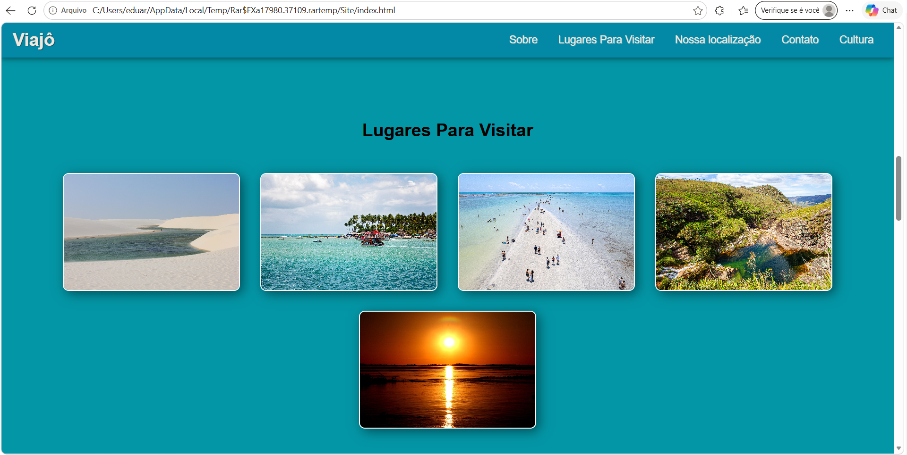

Formação em andamento
Análise e Desenvolvimento
de Sistemas
UDF
Tecnologia com propósito
Suporte N3 & implantador de sistemas.
Desenvolvimento web em formação.
Conecto pessoas e tecnologia no dia a dia. Agora, também transformo aprendizado em interfaces, código e novas possibilidades.

01 — Sobre mim
Gosto de entender problemas, ajudar pessoas e encontrar caminhos para fazer a tecnologia funcionar melhor.
Sou Carlos Eduardo Silva Costa, de Brasília. Minha trajetória passa pelo atendimento ao público, pelas rotinas administrativas e pelo suporte a sistemas ERP. Hoje, atuo como suporte N3 e implantador, acompanhando usuários e empresas no uso do software.
Retomei a graduação em Análise e Desenvolvimento de Sistemas e estou construindo minha base em desenvolvimento web. Este portfólio reúne essa caminhada: experiência profissional, estudos e projetos em evolução.
Formação em andamento
UDF
Espanhol avançado · Inglês básico
02 — Experiência
Do atendimento ao suporte especializado.
Aprendendo em cada
etapa.
BENU Sistemas ERP · Lago Norte, DF
Suporte técnico a usuários de ERP, diagnóstico de problemas e colaboração com o desenvolvimento na correção de erros e melhorias.
CONBRAS Serviços Técnicos de Suporte · Asa Norte, DF
Atividades administrativas, elaboração de documentos, apresentação de orientações de segurança e levantamento de informações de hardware da sede.
OSJC · Sobradinho, DF
Atendimento ao público, conferência de processos, elaboração de documentos e apoio às atividades de escritório.
UDF · Análise e Desenvolvimento de Sistemas
Graduação retomada, com prática em HTML, CSS e JavaScript e projetos acadêmicos como a página de turismo Viajô. Os projetos selecionados estão logo abaixo.
03 — Habilidades
Experiência aplicada no trabalho e
tecnologias praticadas nos
estudos.
Aprendizado aplicado em páginas e aplicações web.
Ferramentas e práticas presentes na minha trajetória.
Competências exercitadas no atendimento e na implantação.
04 — Projetos em destaque

Projeto principal · 01
Site responsivo com catálogo de eventos e galerias. O projeto também explora uma API local e um painel administrativo; a versão estática mantém conteúdo demonstrativo.
Explorar repositório
Projeto principal · 02
Loja de moda fitness com vitrine, categorias, variantes e sacola. O projeto inclui autenticação e catálogo em ambiente local com Cloudflare Workers e D1. Checkout ainda desabilitado.
Explorar repositório
Organização de tarefas por disciplina, filtros de conclusão e acompanhamento do progresso, com dados salvos no navegador. Projeto de prática criado com auxílio de IA.
Explorar repositório
Página de uma agência fictícia de turismo, com destinos brasileiros, mapa e formulário visual. Desenvolvida para praticar estrutura HTML e estilos CSS; não realiza envios.
Explorar repositório05 — Vamos conversar?
Uma ideia, uma oportunidade ou uma troca sobre tecnologia.
Vai
ser um prazer conversar com você.